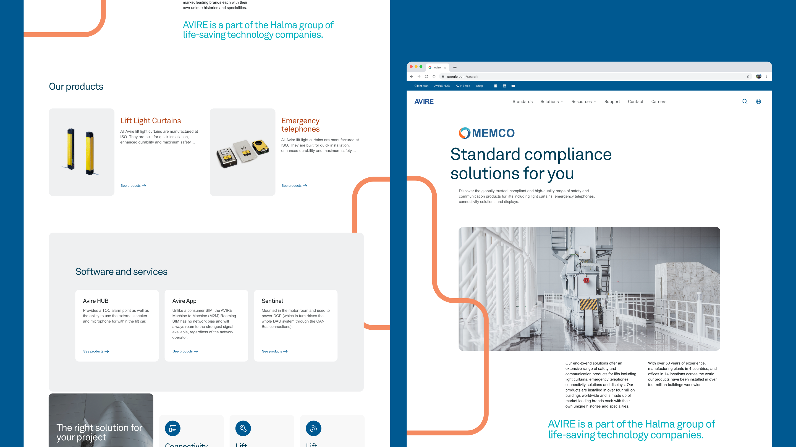
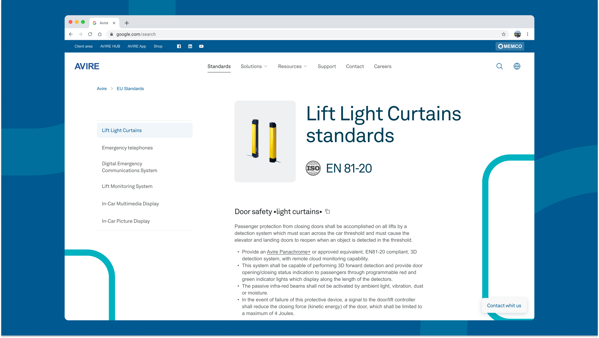
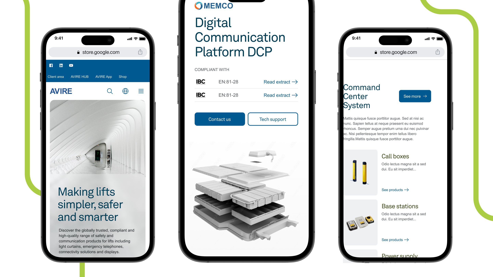

01 · Challenge
The Challenge
Avire is a global elevator product supplier that had recently consolidated multiple sub-brands under one identity. The business had unified — but the website hadn't. What users experienced was a fragmented digital presence: regional inconsistencies, buried information, slow performance, and no mobile optimization.
The impact was tangible. Engineers and installers — Avire's most technical users — preferred calling support rather than navigating the website to find what they needed. The marketing team couldn't update content without developer involvement, creating bottlenecks that slowed every campaign. And with future acquisitions likely, the platform needed to scale in ways the current architecture couldn't support.
This wasn't a cosmetic redesign. Avire's website functioned as a compliance guide, an educational hub, and a sales tool simultaneously. The challenge was to build one platform that served all of these purposes, felt relevant across global markets, and could be managed independently by non-technical teams.
02 · Users
Understanding the Users
We conducted stakeholder interviews and competitor analysis across key markets to understand who the platform needed to serve and where the current experience was failing them.
User Group 01
Lift Consultants
Guided architects and property owners through compliance decisions. They needed fast access to up-to-date standards and spec sheets — and the current site buried this information under layers of navigation.
User Group 02
Facility Managers and Building Owners
Responsible for maintaining lifts but often with limited technical knowledge. They needed plain-language explanations, not engineering documentation.
User Group 03
Engineers and Installers
The heaviest users — and the most frustrated. Time-pressed and often on-site, they needed quick, mobile-friendly access to installation guides, troubleshooting resources, and video tutorials. Instead, they called support.
Core Tension
The research surfaced a critical tension: the site had to function as both a brand hub (for consultants and decision-makers) and a technical tool (for engineers and installers). These audiences had fundamentally different needs — polish and credibility vs. speed and clarity. Any solution had to serve both without compromising either. This tension between global coherence and local relevance became the defining design challenge of the project.

03 · Strategy
Design Strategy
Working closely with the Lead Designer, I shaped the design direction around three principles:
Clarity for users
Simplify the information architecture so users could find what they needed with fewer clicks. We restructured navigation around user intent ("Install," "Maintain," "Comply") rather than Avire's internal product taxonomy.
Efficiency for teams
Give the marketing team CMS autonomy so they could update content across regions without developer dependencies.
Scalability for the business
Build a modular component system with localized templates and regional content flexibility, so new markets or sub-brands could be added without redesigning the platform.
Region-specific customization
Rather than building separate sites per market, I designed a single platform with dynamic regional content. Users see information relevant to their location, while the underlying structure and design language remain consistent globally.
Task-based navigation
The old site organized content by product category. I restructured it around what users actually came to do — install, maintain, comply, purchase. This reduced navigation depth and aligned the IA with user mental models.
Self-service resource hub
Engineers were calling support because finding resources on the site was harder than picking up the phone. I designed a centralized resource library with clear categorization — installation guides, compliance documents, and video tutorials — all searchable and filterable.

Mobile-first approach
Engineers and installers access the site from job sites, not desks. Every layout decision prioritized mobile usability — fast loading, thumb-friendly navigation, and content hierarchy optimized for small screens.
CMS-friendly component system
I designed modular, flexible sections that marketing could update independently without touching the underlying code. This wasn't just a design decision — it was an operational one that removed the marketing-to-dev bottleneck entirely.
The CMS-first constraint shaped most of the component decisions in ways that weren't obvious from the brief. Every layout section, every content block, every regional variation had to be something a marketing team member could update independently — which meant the design couldn't rely on developer flexibility as a fallback. That changed how I approached modularity: instead of designing ideal layouts and figuring out CMS fit afterward, I worked backwards from what the system could realistically support. Some directions didn't survive that constraint. The trade-off was worth it — a slightly less bespoke interface that the team could actually maintain was more valuable than a polished one that would need developer help to update.

04 · Testing
Testing and Iteration
After development, we ran usability tests across regions to validate the design against real user behavior.
What testing revealed
Finding 01
Navigation taxonomy
Needed further simplification — we refined it by approximately 35%, removing redundant categories and consolidating related content into cleaner groupings.
Finding 02
Terminology clarity
Non-technical users (facility managers) struggled with labels that felt clear to engineers but read as jargon to building owners. We revised copy across key sections to use plain language.
Finding 03
Resource categorization
Engineers expected to filter resources by task type, not document format. We recategorized the resource library to match how users searched for content, not how we organized it internally.
Finding 04
Regional content filters
Users managing compliance across multiple markets needed regional content filters placed more prominently — they were being overlooked in their existing position.
05 · Impact
Impact
Measured outcomes · Post-launch
Some metrics are based on post-launch analytics; others are approximate, based on stakeholder feedback and observation during the project.
06 · Reflections
Reflections
01
Designing for two audiences at once requires clear principles, not compromise
The brand hub vs. technical tool tension could have led to a design that did neither well. Task-based navigation was the key insight — it let both audiences find their own path without the platform trying to be two different things.
02
Regional content flexibility is a design problem, not just a CMS problem
The challenge wasn't just "can marketing swap out content per region" — it was designing layouts and components that remained coherent whether they contained UK compliance standards or Asian market product specs. Global consistency with local relevance had to be designed into the system, not bolted on.
03
Scalability means designing for the company's future, not just its present
Knowing that acquisitions were likely, every structural decision had to pass the test: "Will this still work when Avire adds another sub-brand?" That constraint pushed us toward modularity at every level.
04
Bringing UI depth to a strategic project multiplies impact
My strongest contribution was translating strategic direction into concrete, production-ready design decisions — the component system, the responsive layouts, the regional content architecture. Strategy without execution stays abstract; this project reinforced that the ability to move fluently between both is what makes collaborative design work.